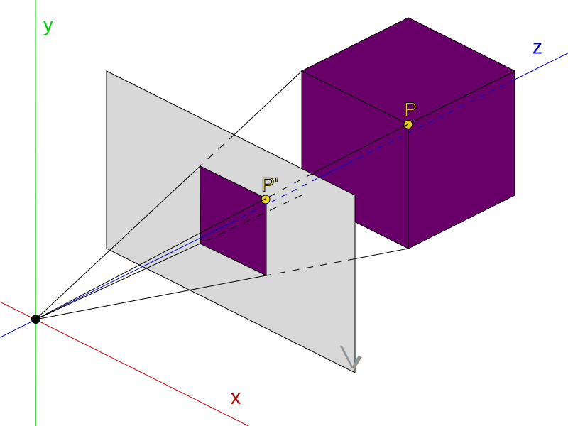
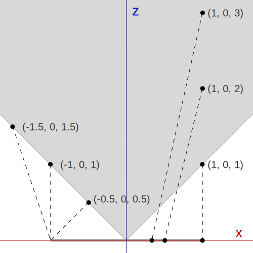
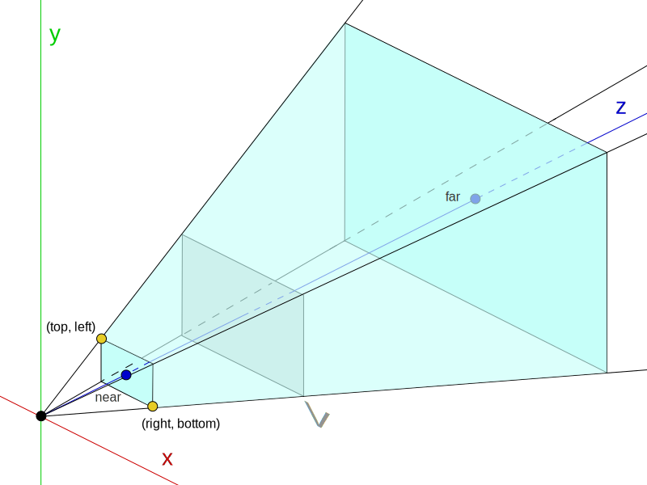
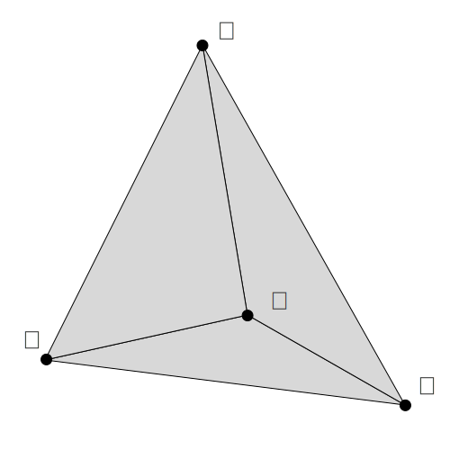

Renderowanie obrazu 3D
Wstęp
Niniejszy artykuł ma na celu wprowadzenie w proces renderowania grafiki 3D, przedstawiając krok po kroku, jak stworzyć prosty silnik graficzny. Wszystkie omawiane techniki bazują na architekturze współczesnych potoków renderowania, ale w wersji uproszczonej, by zrozumieć ich istotę i zasadę działania.
Zakładam, że czytelnik potrafi programować, ale niekoniecznie zna zagadnienia związane z grafiką 3D i stojącą za nią matematyką. Zgodnie z filozofią "0 dependencies", artykuł nie wymaga sięgania po zewnętrzne źródła – wszystko, co niezbędne do implementacji, znajdziesz tutaj. Poznasz podstawy algebry liniowej, proces rzutowania, transformacji, rasteryzacji oraz łączenia tych elementów w działającą całość.
Manipulacja obrazem na poziomie pikseli
Celem tego artykułu jest implementacja w języku JavaScript procesu generowania obrazu 3D, piksel po pikselu. W JavaScript istnieje możliwość manipulacji obrazem na poziomie pojedynczych pikseli. Umożliwia to element dokumentu HTML <canvas> nazywany płótnem.
W pierwszej kolejności należy uzyskać kontekst graficzny płótna:
const context = canvas_element.getContext('2d')
Kontekst umożliwia dostęp do interfejsu programistycznego – Canvas API – który zawiera szereg funkcji graficznych. Na przykład funkcję rysowania linii i kształtów. W tym artykule interesuje nas jedynie bezpośrednia manipulacja pikselami. W tym celu pobieramy strukturę danych zawierającą tablicę bajtów przechowującą wartości RGBA kolejnych pikseli:
const image = context.getImageData(0, 0, context.canvas.width, context.canvas.height);
Każde kolejne 4 bajty w tablicy image.data reprezentują wartość RGBA pojedynczego piksela. Tablicę tą możemy dowolnie modyfikować. Po wypełnieniu tablicy pożądanymi wartościami przekazujemy ją spowrotem na płótno:
context.putImageData(image, 0, 0);
Poniższy program prezentuje manipulację kolorami pikseli. Wartość czerwieni zależy od położenia na osi 𝖷. Wartość zieleni zależna jest od osi 𝖸. Natomiast wartość koloru niebieskiego zależy od obu osi. Wartość alpha jest ustawiany na 255 co oznacza całkowity brak przeźroczystości.
Elementaria algebry liniowej
W tym rozdziale opisano elementarne struktury i operacje algebry liniowej wykorzystywane w tym artykule. Większość tematów jest omawiana znacznie szerzej w programach każdych studiów technicznych, dlatego większość czytelników może ten rozdział pominąć.
Nie wszystkie metody zostały opisane. Wiele metod pomocniczych lub oczywistych zostało pominiętych. Kompletny kod znajduje się w plikach źródłowych: Matrix.js, Matrix2.js, Matrix3.js, Matrix4.js, Vector.js, Vector2.js, Vector3.js, Vector4.js. Wszyskie wymienione pliki znajdują się w folderze repozytorium pod adresem https://github.com/pawel-stepnowski/rendering/tree/main/js/math.
Macierz
Macierz o wymiarach 𝑚 × 𝑛 definiujemy jako zbiór wartości uporządkowanych w 𝑚 kolumnach i 𝑛 wierszach:
W przedstawionej implementacji macierz jest reprezentowana jako tablica tablic.
Kod struktur matematycznych oraz całej prezentowanej implementacji oparty jest na silnym typowaniu. Konfigurację kontroli typów można znaleźć w pliku jsconfig.json. W szczególności implementacja struktur matematycznych posługuje się definicjami typów zawartymi w pliku types.d.ts, które przedstawiono poniżej:
Powyższe struktury matematyczne wykorzystują następującą definicję typu tablicy o stałym rozmiarze:
type FixedArray<T, N extends number> = [T, ...T[]] & { length: N }Kod metody createZero(m, n) tworzącej macierz zerową:
Kod metod create(n, initializer) i createZero(n) tworzących tablice o stałym rozmiarze, wykorzytywane przy tworzeniu macierzy:
Wektor
Wektor o rozmiarze 𝑛 jest szczególnym przypadkiem macierzy o wymiarach 𝟣 × 𝑛.
W implementacji wektor jest reprezentowany jako tablica jednowymiarowa, co zwiększa wygodę programowania. Kod metody createZero(n) tworzącej wektor zerowy:
Mnożenie macierzy
Mnożenie macierzy 𝐴 o wymiarach 𝑚 × 𝑝 przez macierz 𝐵 o wymiarach 𝑝 × 𝑛 daje macierz 𝐶 o rozmiarze 𝑚 × 𝑛. Elementy wynikowej macierzy są obliczane według następującego wzoru:
Kod metody mul(a, b) realizującej mnożenie macierzy:
Macierz tożsamościowa
Macierz tożsamościowa to macierz kwadratowa, która przemnożona przez dowolny wektor zwraca ten sam wektor. Elementy macierzy tożsamościowej wynoszą 𝟣 na przekątnej i 𝟢 w pozostałych miejscach. Przykład mnożenia wektora przez macierz tożsamościową:
W dalszej części artykułu niektóre macierze przekształceń będą często konstruowane na bazie macierzy tożsamościowej.
Wybrane odwzorowania liniowe
Odwzorowania liniowe w kontekście tego artykułu to przekształcenia przestrzeni, które można wyrazić w postaci mnożenia macierzy przez wektory, które skutkują zmianą współrzędnych tego wektora w przestrzeni.
W przykładach ilustrujących odworowania liniowe wykorzystano klasę pomocniczą PlaneCanvas, która nie jest częścią opisywanej implementacji. Należy jedynie zaznaczyć, że nie realizuje ona rysowania figur za pomocą bezpośredniej manipulacji pikselami, ale wykorzystuje funkcje Canvas API do rysowania odcinków.
Obrót
Wzór na obrót punktu wokół środka układu współrzędnych, kąt 𝛼:
Kod funkcji rotate realizującej obrót punktu zgodnie z powyższym wzorem:
Przykład wykorzystania funkcji rotate do obrotu trójkąta:
Obrót przy użyciu macierzy
Obrót punktu można zrealizować przez przemnożenie macierzy o wymiarach 𝟸 × 𝟸 przez wektor 𝟸-elementowy:
Przy odpowiednim podstawieniu wartości pod , otrzymujemy macierz obrotu:
Kod metody Matrix2.createRotation, która zwraca macierz obrotu dla zadanego kąta:
Przykład wykorzystania macierzy do obrotu trójkąta:
Przesunięcie
Przesunięcie to operacja dodania do współrzędnych punktu (𝑥, 𝑦) dowolnych wartości nazywanych wartościami przesunięcia. Aby zrealizować przesunięcie punktu na płaszczyźnie za pomocą macierzy, należy zbudować macierz o wymiarach 𝟹 × 𝟹, a punkt reprezentować jako wektor (𝑥, 𝑦, 𝟷) w przestrzeni jednorodnej (o której będzie mowa w dalszej części artykułu).
Przykładowa macierz przesunięcia:
Otrzymujemy następujące równania na wartości 𝑥′, 𝑦′, 𝑧′ wynikowego wektora:
Równania te dowodzą, że skonstruowana macierz realizuje przesunięcie o , zatem:
Łączenie odwzorowań
Odwzorowania liniowe reprezentowane w postaci macierzy, można łączyć, mnożąc te macierze przez siebie. Jeśli chcemy poddać zbiór wielu punktów szeregowi przekształceń, można wstępnie przemnożyć macierze tych przekształceń, a następnie każdy z punktów poddać jednemu mnożeniu przez powstałą macierz. Redukuje to liczbę wykonywanych operacji i poprawia efektywność obliczeń.
Kod programu łączącego obrót i przesunięcie w jedną macierz transformacji:
Rzutowanie
Rzutowanie w kontekście tego artykułu oznacza odwzorowanie punktu w przestrzeni trójwymiarowej na płaszczyznę rzutowania (projection plane). Poniższa ilustracja przedstawia rzutowanie punktu 𝑃, na płaszczyznę 𝑉 (nazywaną rzutnią, płaszczyzną rzutowania, płaszczyzną obrazu etc.) w punkcie 𝑃′.
W artykule omówiono jedynie projekcję perspektywiczną (perspective projection), z jednym punktem obserwatora (single vanishing point). A więc taką jak przedstawiona na powyższej ilustracji. Warto wiedzieć, że istnieją jednak inne rodzaje rzutowań, takie jak projekcja równoległa (orthographic projection), projekcja perspektywiczna z wieloma punktami obserwatora (multi-point perspective projection) czy rzut panoramiczny (panoramic projection).
Dzielenie perspektywiczne
Najprostszym sposobem rzutowania perspektywicznego jest dzielenie perspektywiczne (perspective division). Polega ono na podzieleniu wartości 𝑥 i 𝑦 przez współrzędną 𝑧. Dla rzutowanego punktu otrzymujemy na rzutni punkt .
Poniższa ilustracja przedstawia rzut kilku wybranych punktów. W prawej cześci ilustracji widać, że punkty znajdujące się coraz dalej na osi 𝑍 są rzutowane coraz bliżej środka rzutni. Jest to intuicyjne i zgodne z naszym codziennym doświadczeniem. W lewej części ilustracji widać, że punkty postaci (−𝑘, 𝟢, 𝑘) są rzutowane na końcową krawędź rzutni. Z tego faktu można wywnioskować, że szerokość pola widzenia w tym rzutowaniu wynosi 𝟫𝟢°.
Kod programu rysującego sześcian przy użyciu dzielenia perspektywicznego:
Współrzędne jednorodne
Punkt na płaszczyźnie o współrzędnych h (𝑥, 𝑦) można zapisać w postaci współrzędnych jednorodnych (𝑥, 𝑦, 𝟣) lub bardziej ogólnie (𝑘𝑥, 𝑘𝑦, 𝑘), gdzie 𝑘 ≠ 𝟢.
Analogicznie punkt o współrzędnych jednorodnych (𝑥, 𝑦, 𝑧) posiada współrzędne na płaszczyźnie postaci (𝑥/𝑧, 𝑦/𝑧), co jest równoważne dzieleniu perspektywicznemu.
W dalszej części artykułu, zakłada się, że konstruowane macierze rzutowań zwracają współrzędne w przestrzeni jednorodnej. Jest to również zgodne z implementacjami OpenGL czy DirectX, gdzie współrzędne jednorodne są wykorzystywane w potoku renderowanie (rendering pipeline), w którym po otrzymaniu współrzędnych jednorodnych, wykonywanych jest szereg innych obliczeń, dopiero po których wykonuje się dzielenie perspektywiczne. Współrzędne jednorodne pozwalają na precyzyjniejsze i optymalniejsze wykonanie tych etapów. Mimo, że przedstawiona w tym artykule implementacja nie wprowadzaja żadnych tego typu optymalizacji, zachowana zostanie zgodność z operacjami na współrzędnych jednorodnych.
Prosta macierz projekcji
Chcemy zdefiniować macierz która przekształci punkt (𝑥, 𝑦, 𝑧) w jego rzut we współrzędnych jednorodnych. Jak już pokazano, dzielenie perspektywiczne odpowiada wykorzystaniu współrzędnych jednorodnych, zatem wynikowy wektor powinien mieć postać (𝑥, 𝑦, 𝟢, 𝑧).
Zgodnie z definicją współrzędnych jednorodnych, chcemy aby:
A więc musi zachodzić:
Macierz dzielenia perspektywicznego ma zatem postać:
Kod funkcji tworzącej macierz dzielenia perspektywicznego:
Kod programu rysującego sześcian wykorzystujący macierz dzielenia perspektywicznego:
Macierz projekcji
W rzeczywistych rozwiązaniach stosuje się bardziej złożone macierze rzutowania perspektywicznego. Najbardziej popularną metodą konstrukcji jest ta oparta o kąt widzenia (field of view, FOV). Sposób jej konstrukcji można znaleźć pod adresem https://www.songho.ca/opengl/gl_projectionmatrix.html#fov. W przykładzie zostanie przedstawiona mniej popularna metoda, oparta na ograniczeniach płaszczyzny widzenia: top, left, right, bottom. Obie metody dają te same możliwości rzutowania, ale różnią się zestawem parametrów służącym do konstrukcji macierzy.
Do konstrukcji macierzy rzutowania przyjmuje się następujące parametry rzutowania:
- left – współrzędna lewej krawędzi bliższej płaszczyzny odcinania.
- right – współrzędna prawej krawędzi bliższej płaszczyzny odcinania.
- top – współrzędna górnej krawędzi bliższej płaszczyzny odcinania.
- bottom – współrzędna dolnej krawędzi bliższej płaszczyzny odcinania.
- near – odległość do bliższej płaszczyzny odcinania (near clipping plane).
- far – odległość do dalszej płaszczyzny odcinania (far clipping plane).
Powyższe parametry definiują tak zwaną bryłę widzenia (viewing frustum), będącą ściętym ostrosłupem, który ogranicza to co jest widoczne.
W dalszej częsci zostanie przedstawiona konstrukcja macierzy rzutowania perspektywicznego wiersz po wierszu, czyli dla każdej kolejnej współrzędnej wynikowego wektora.
Obliczanie 𝑥′
Wartość 𝑥′ zależy od wartości 𝑥 oraz left i right. Szersze pole widzenia jest wynikiem większych wartości left i right. Szerokość pola widzenia zmniejsza się wraz z oddalaniem bliższej płaszczyzny odcinania - zwiększaniem się wartości near. Konieczne jest przeskalowanie wartości 𝑥, uwzględniając wszystkie te wartości:
Wartość near jest pomnożona przez 𝟤, ze względu na rozpiętość rzutni od -𝟣 do 𝟣.
Wartość 𝑥′ jest niezależna od 𝑦, więc .
Jeśli suma wartości left i right ≠ 0, oznacza to że obserwator nie patrzy wzdłuż osi 𝑥. Powoduje to, że wartości 𝑥' ulegają przesunięciu które jest proprocjonalne do wartości 𝑧:
Wartość 𝑥′ jest niezależna od w, więc .
Podsumowując:
Obliczanie 𝑦′
Wszystkie obliczenia dla 𝑦′ są analogiczne jak dla 𝑥′. Z tą różnicą, że zamiast wartości left i right należy uwzględnić wartości top i bottom. W ich wyniku czego otrzymujemy:
Obliczanie 𝑧′
Wartość 𝑧′ jest niezależna od 𝑥, więc .
Wartość 𝑧′ jest niezależna od 𝑦, więc .
Wartość 𝑧′ jest zależna od 𝑧.
Współczesne implementacje takie jak OpenGL czy DirectX zakładaja, że współrzędne jednorodne będące rezultatem rzutowania, po przekształceniu do współrzędnych kartezjańskich, będą znajdować się w tak zwanej przestrzeni NDC (Normalized Device Coordinates). Jest to przestrzeń w formie sześcianu ograniczonego wartościami od -𝟣 do 𝟣 na każdej z osi współrzędnych.
Przekształcenie którego szukamy musi być liniowe, a więc postaci 𝑧′ = 𝑎 ⋅ 𝑧 + 𝑏, gdzie 𝑎 i 𝑏 są współczynnikami, które należy wyznaczyć.
Wiemy, że dla 𝑧 = near, 𝑧′ = -𝟣, więc:
Dla 𝑧 = fat, 𝑧′ = 𝟣, więc:
Otrzymujemy prosty układ dwóch równań liniowych z dwoma niewiadomymi 𝑎 i 𝑏. W jego rozwiązaniu otrzymujemy:
Znalezione przekształcenie to:
Składniki sumy będącej przekształceniem musimy zapisać w dwóch komórkach macierzy . Okazuje się tutaj pomocna współrzędna 𝑤 równa 𝟣, dzięki której w czwartej kolumnie macierzy możemy umieścić formułę na jeden ze składników sumy. Podsumowując:
Obliczanie 𝑤′
Wartość 𝑤 służy jedynie do przechowywania oryginalnej wartości 𝑧, która stanowi komponent jednorodny wynikowego wektora.
Wartość ujemna pojawia się dla zgodności z OpenGL, w którym obserwator spogląda w kierunku ujemnym osi 𝖹.
Konstrukcja macierzy końcowa
Zbierając obliczenia dla wszystkich wierszy w jedną macierz otrzymujemy:
Kod metody createPerspectiveProjection konstrującej macierz projekcji:
Kod programu używający metody createPerspectiveProjection:
Rasteryzacja
Rasteryzacja to proces konwersji trójkątów, na piksele na ekranie. Kluczowym narzędziem używanym w tym procesie są współrzędne barycentryczne.
Współrzędne barycentryczne
Współrzędne barycentryczne punktu 𝑃 dla trójkąta o wierzchołkach w punktach 𝐴, 𝐵, 𝐶, to współczynniki α, β, γ, które wskazują, w jakim stopniu każdy z wierzchołków trójkąta wpływa na położenie punktu 𝑃 wewnątrz tego trójkąta:
Współczynniki (α, β, γ) mają następujące własności:
- α + β + γ = 𝟣
- Jeśli α, β, γ > 𝟢, to punkt 𝑃 leży wewnątrz trójkąta.
- Jeśli dowolny współczynnik < 𝟢, to punkt poza trójkątem.
Współrzędne barycentryczne pozwalają na interpolację wartości. Przykładowo jeśli każdemu z wierzchołków przypiszemy kolor, to możemy obliczyć kolor każdego punktu wewnątrz trójkąta uzyskując płynne gradientowe przejście pomiędzy kolorami wierzchołków:
Współrzędne barycentryczne są proporcjonalne do pól trójkątów utworzonych przez punkt 𝑃 z wierzchołkami trójkąta.
Pole trójkąta 𝐴𝐵𝐶 wynosi:
Wartości współrzędnych barycentrycznych na podstawie pola trójkąta wynoszą odpowiednio:
Współrzędne barycentryczne są często zapisywane w uproszczonej formie jako (𝑢, 𝑣) = (α, β). Wartość γ można odtworzyć z uproszczonej formy korzystając ze wzoru γ = 𝟣 - 𝑢 - 𝑣.
W opisywanej implementacji funkcjonalność ta została zaimplementowana w klasie BarycentricCoordinates.js. Kod ten pozwala na obliczanie współrzędnych barycentrycznych dla dowolnego punktu wewnątrz trójkąta i wykorzystywanie ich do interpolacji wartości.
Trawersowanie trójkąta
Trawersowanie trójkąta (triangle traversal) to proces iteracyjnego przechodzenia przez wszystkie piksele, które znajdują się wewnątrz obszaru wyznaczonego przez trójkąt. Jest to jeden z kluczowych etapów rasteryzacji, ponieważ w jego trakcie określa się, które piksele na ekranie mają zostać wypełnione wartościami.
W opisywanej implementacji stosowany jest prosty algorytm trawersowania, który składa się z następujących kroków:
- Wyznaczenie prostokąta opisującego trójkąt. Prostokąt opisujący (bounding box) to najmniejszy prostokąt obejmujący wszystkie wierzchołki trójkąta. Wyznaczenie tego prostokąta pozwala ograniczyć obszar sprawdzania pikseli i optymalizuje działanie algorytmu.
- Sprawdzanie pikseli wewnątrz prostokąta. Dla każdego piksela w prostokącie sprawdzane jest, czy znajduje się on wewnątrz trójkąta. Weryfikacja odbywa się za pomocą współrzędnych barycentrycznych.
Opisany algorytm został zaimplementowany w klasie TriangleTraversal.js.
Przykład rasteryzacji
Poniżej przedstawiono kod przykładowego programu, który renderuje trójkąt przy użyciu klasy TriangleTraversal:
Proces renderowania
W tym rozdziale zostanie połączona wiedza zdobyta w poprzednich częściach w jeden proces renderowania, obejmujący transformacje wierzchołków, rasteryzację i wypełnianie pikseli kolorem.
Opis procesu
Parametry procesu
Proces renderowania można podsumować następująco:
- Dane wejściowe które obejmują współrzędne (𝑥, 𝑦, 𝑧) wszystkich trójkątów oraz ich atrybuty, takie jak kolor. Pozycja (𝑥, 𝑦, 𝑧) jest wyróżnionym atrybutem, ponieważ jest obowiązkowa.
-
Parametry procesu renderowania
-
Funkcja
vertexShaderwykonywana jest dla każdego wierzchołka i odpowiada za:- Przekształcenie współrzędnych wierzchołka do przestrzeni jednorodnej (homogeneous space).
- Przygotowanie zestawu atrybutów dla funkcji
fragmentShader.
- Funkcja
fragmentShaderwykonywana jest dla każdego piksela należącego do trójkąta. Jej zadaniem jest obliczenie koloru piksela. - Struktura
Uniformszawiera stałe dane wejściowe wspólne dla wszystkich wierzchołków i pikseli.
-
Funkcja
Proces renderowania został zaimplementowany w klasie Renderer, której konstruktor przyjmuje dwie funkcje:
vertexShader(uniforms, input, output)fragmentShader(uniforms, input, output)
Metoda draw(data) klasy Renderer odpowiada ze przebieg procesu renderowania, wykorzystując przekazane w konstruktorze funkcje vertexShader i fragmentShader.
Przebieg procesu
Dla każdego trójkąta (składającego się z trzech wierzchołków) metoda draw wykonuje następujące kroki:
-
Transformacja wierzchołków
- Dla każdego z trzech wierzchołków wywoływana jest funkcja
vertexShader. -
Funkcja ta przetwarza atrybuty wierzchołka i zwraca:
- Współrzędne jednorodne wierzchołka.
- Zestaw atrybutów potrzebnych funkcji
fragmentShader.
- Dla każdego z trzech wierzchołków wywoływana jest funkcja
-
Rasteryzacja trójkąta
- Na podstawie trzech wierzchołków trójkąta wykonywany jest opisany wcześniej algorytm rasteryzacji.
-
Dla każdego piksela należącego do trójkąta:
- Wyznaczane są zinterpolowane atrybuty na podstawie atrybutów wierzchołków.
- Wywoływana jest funkcja
fragmentShader, która na podstawie atrybutów piksela oblicza jego kolor. - Obliczony kolor jest zapisywany w obrazie wyjściowym.
Kod metody draw odpowiedzialnej za proces renderowania:
Przykład użycia
Dane wejściowe
- Atrybuty wierzchołków. Tablice zawierające współrzędne oraz dodatkowe dane, takie jak kolory.
- Indeks (index buffer). Tablica określająca, które wierzchołki tworzą trójkąty.
Poniżej znajduje się ilustracja przedstawiająca zbiór danych indeksowanych. Znajdują się na niej: V to tablica zawierająca n atrybutów współrzędnych w przestrzeni. C to tablica zawierająca n atrybutów koloru. I to tablica będąca indeksem, która łączy trójki każdego z atrybutów w atrybuty jednego trójkąta. Indeks może używać tego samego atrybutu wielokrotnie dla różnych trójkątów.
- 𝖵 – tablica współrzędnych (𝑥, 𝑦, 𝑧).
- 𝖢 – tablica kolorów (𝑟, 𝑔, 𝑏).
- 𝖨 – tablica indeksów łącząca atrybuty w trójkąty.
Indeksowanie pozwala na ponowne wykorzystanie tych samych wierzchołków w różnych trójkątach, co redukuje redundancję danych i optymalizuje pamięć. W implementacjach takich jak OpenGL czy DirectX istnieją możliwości tworzenia buforów dla różnych atrybutów o które różnią się rozmiarami i są do pewnego stopnia indeksowane niezależnie.
Poniżej predsrtawiono kod funkcji createDrawData przygotowującej przykładowe. Dane te opisują współrzędne trójkąta położonego w środku układu współrzędnych wraz z kolorami wierzchołków. Dane te są indeksowane zgodnie z wymaganiem metody draw. Zmienna data.indices zawiera indeksy trójkąta, którego atrybuty są zapisane w zmiennej data.attributes.
W konstruowanym przykładzie powyższe dane są przekazywane do metody draw dwukrotnie, aby wyrenderować dwa trójkąty. Dla każdego z trójkątów zostaną ustawione inne wartości zmiennej uniforms, tak aby wyrenderować je w innym położeniu.
Kod funkcji createTriangleTranslations zwracającej macierze przesunięcia dla obu trójkątów:
Uniforms
Uniforms używane w przykładzie:
projection– macierz rzutowania, która przekształca współrzędne w przestrzeń jednorodną.view– macierz widoku, przesuwa scenę względem obserwatora.model– macierz modelu, odpowiada za lokalne przekształcenie obiektu we własnym układzie współrzędnych. W przykładzie zostanie ona wykorzystana do obrotu trójkąta wokół osi Y.
Kod funkcji createUniforms zwracającej strukturę uniforms:
Vertex Shader
Funkcja vertexShader(uniforms, input, output) jest wywoływana dla każdego wierzchołka.
- Przekształcenie współrzędnych wierzchołka przez macierze
model,viewiprojection. - Przekazanie atrybutów koloru dla funkcji
fragmentShader.
Kod funkcji vertexShader dla konstruowanego przykładu:
Rasteryzacja i Fragment Shader
Po wywołaniu funkcji vertexShader dla trzech wierzchołków trójkąta, następuje rasteryzacja. W metodzie draw zastosowanio opisany wcześniej algorytm trawersowania. Dla każdego piksela który należy do trawersowanego trójkąta, wywoływana jest funkcja fragmentShader w celu obliczenia jego koloru. Atrybuty piksela przekazywane do funkcji fragmentShader są wartościami zinterpolowanymi na podstawie wartości otrzymanych od funkcji vertexShader.
Kod funkcji fragmentShader dla konstruowanego przykładu:
Renderowanie
W poprzednich punktach tego rozdziału zostały zdefiniowane przykładowe funkcje vertexShader i fragmentShader oraz struktura uniforms. Pozwala to na skonstruowanie obiektu klasy Renderer, co przedstawia poniższy kod:
Zmienne vertex_shader_input_attributes i fragment_shader_input_attributes mają znaczenie czysto techniczne i mają na celu włatwienie metodzie draw konstruowanie struktur danych potrzebnych do obliczeń.
Pozostało połączyć przedstawione w poprzednich punktach dane oraz funkcje w główną funkcję renderującą:
Dodatek A. Demo
Umieszczony tutaj przykład zawiera nieco bardziej złożoną scenę oraz tranformacje. Można zauważyć, że bufora Z powoduje że dalsze obiekt mogą przykrywać obiekty bliższe. Doimplementowanie bufora Z jest dość proste i pozostaje jako ćwiczenia dla czytelnika.
Kod żródłowy tego przykładu znajduje się pod adresem https://github.com/pawel-stepnowski/rendering/tree/main/js/math/Vector4.js.
Dodatek B. WebGL
Dodatek ten ma na celu przedstawienie podobieństwa procesu renderowania w WebGL do tego który został opisany w tym artykule.
Kod źródłowy TODO